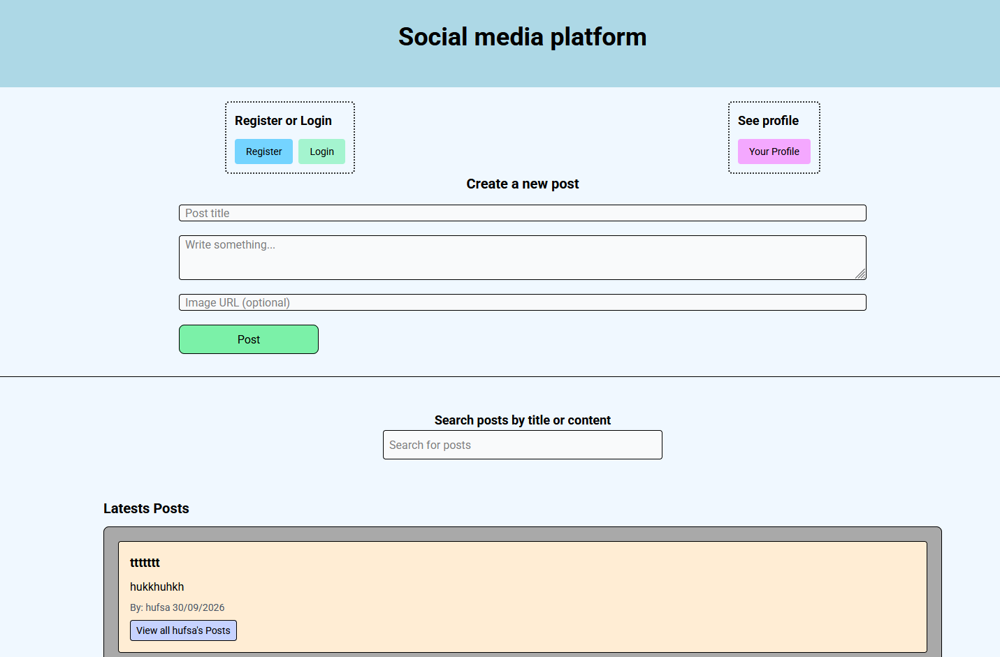

CSS Framework
Is a social media platform where I worked with Tailwindcss

About the project
In this project I learned to use Tailwindcss framework. To use the platform you need to register a user then login to browse posts. You can comment on posts and make your own posts with image, follow users through their posts, look at all the post a user has made and other users can follow you and see your posts. You can unfollow users, edit or delete your own posts in your profile page, in your profile you can see how many you follow, how many that follows you, how many posts you have made and see all your posts.